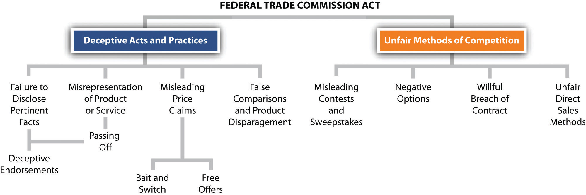

Common law prohibited a variety of trade practices unfair either to competitors or to consumers. These included passing off one’s products as though they were made by someone else, using a trade name confusingly similar to that of another, stealing trade secrets, and various forms of misrepresentation. In the Federal Trade Commission Act of 1912, Congress for the first time empowered a federal agency to investigate and deter acts of unfair competition.
Section 5 of the act gave the Federal Trade Commission (FTC) power to enforce a law that said “unfair methods of competition in commerce are hereby declared unlawful.” By “unfair methods of competition,” Congress originally intended acts that constituted violations of the Sherman and Clayton Antitrust Acts. But from the beginning, the commissioners of the FTC took a broader view of their mandate. Specifically, they were concerned about the problem of false and deceptive advertising and promotional schemes. But the original Section 5 was confining; it seemed to authorize FTC action only when the deceptive advertising injured a competitor of the company. In 1931, the Supreme Court ruled that this was indeed the case: an advertisement that deceived the public was not within the FTC’s jurisdiction unless a competitor was injured by the misrepresentation also. Congress responded in 1938 with the Wheeler-Lea Amendments to the FTC Act. To the words “unfair methods of competition” were added these words: “unfair or deceptive acts or practices in commerce.” Now it became clear that the FTC had a broader role to play than as a second agency enforcing the antitrust laws. Henceforth, the FTC would be the guardian also of consumers.
Deceptive practices that the FTC has prosecuted are also amenable to suit at common law. A tire manufacturer who advertises that his “special tire” is “new” when it is actually a retread has committed a common-law misrepresentation, and the buyer could sue for rescission of the contract or for damages. But having a few buyers sue for misrepresentation does not stop the determined fraudster. Moreover, such lawsuits are expensive to bring, and the amount of damages awarded is usually small; thus law actions alone cannot adequately address deliberately fraudulent practices.
Through Section 5, however, the FTC can seek far-reaching remedies against the sham and the phony; it is not limited to proving damages to individual customers case by case. The FTC can issue cease and desist orders and has other sanctions to wield as well. So do its counterpart agencies at the state level.
As an administrative agency, the FTC has broader powers than those vested in the ordinary prosecutorial authority, such as the Department of Justice. It can initiate administrative proceedings in accordance with the Administrative Procedure Act to enforce the several statutes that it administers. In addition to issuing cease and desist orders and getting them enforced in court, the FTC can seek temporary and permanent injunctions, fines, and monetary damages and promulgate trade regulation rulesMade by the FTC, these rules have the same force and effect as a federal statute. Each rule must pass through a long process, including publication of the proposed rule in the Federal Register, hearings or written comments, and final publication in the Code of Federal Regulations. (TRRs). Although the FTC’s authority to issue TRRs had long been assumed (and was approved by the US court of appeals in Washington in 1973), Congress formalized it in 1975 in the FTC Improvement Act (part of the Magnuson-Moss Warranty Act), which gives the FTC explicit authority to prescribe rules defining unfair or deceptive acts or practices.
A TRR is like a statute. It is a detailed statement of procedures and substantive dos and don’ts. Before promulgating a TRR, the commission must publish its intention to do so in the Federal Register and must hold open hearings on its proposals. Draft versions of a TRR must be published to allow the public to comment. Once issued, the final version is published as part of the Code of Federal Regulations and becomes a permanent part of the law unless modified or repealed by the FTC itself or by Congress—or overturned by a court on grounds of arbitrariness, lack of procedural regularity, or the like. A violation of a TRR is treated exactly like a violation of a federal statute. Once the FTC proves that a defendant violated a TRR, no further proof is necessary that the defendant’s act was unfair or deceptive. Examples of TRRs include the Retail Food Store Advertising and Marketing Practices Rule, Games of Chance in the Food Retailing and Gasoline Industries Rule, Care Labeling of Textile Wearing Apparel Rule, Mail Order Merchandise Rule, Cooling-Off Period for Door-to-Door Sales Rule, and Use of Negative Option Plans by Sellers in Commerce.
With a staff of some sixteen hundred and ten regional offices, the FTC is, at least from time to time, an active regulatory agency. The FTC’s enforcement vigor waxes and wanes with the economic climate. Critics have often charged that what the FTC chooses to investigate defies common sense because so many of the cases seem to involve trivial, or at least relatively unimportant, offenses: Does the nation really need a federal agency to guard us against pronouncements by singer Pat Boone on the efficacy of acne medication or to ensure the authenticity of certain crafts sold to tourists in Alaska as “native”? One answer is that through such cases, important principles of law are declared and ratified.
To be sure, most readers of this book, unlikely to be gulled by false claims, may see a certain Alice-in-Wonderland quality to FTC enforcement. But the first principle of FTC action is that it gauges deceptive acts and practices as interpreted by the general public, not by the more sophisticated. As a US court of appeals once said, the FTC Act was not “made for the protection of experts, but for the public—that vast multitude which includes the ignorant, the unthinking, and the credulous.” The deceptive statement or act need not actually deceive. Before 1983, it was sufficient that the statement had a “capacity to deceive.” According to a standard adopted in 1983, however, the FTC will take action against deceptive advertising “if there is a representation, omission or practice that is likely to mislead the consumer acting reasonably in the circumstances, to the consumer’s detriment.” Critics of the new standard have charged that it will be harder to prove deception because an advertisement must be “likely to mislead” rather than merely have a “capacity to deceive.” The FTC might also be put to the burden of showing that consumers reasonably interpreted the ad and that they relied on the ad. Whether the standard will reduce the volume of FTC actions against deceptive advertising remains to be seen.
The FTC also has the authority to proceed against “unfair…acts or practices.” These need not be deceptive but, instead, of such a character that they offend a common sense of propriety or justice or of an honest way of comporting oneself. See Figure 27.1 "Unfair and Deceptive Practices Laws" for a diagram of the unfair and deceptive practices discussed in this chapter.
Figure 27.1 Unfair and Deceptive Practices Laws
Although common law still serves to prohibit certain kinds of trade practices, the FTC has far more extensive powers to police unfair and deceptive trade practices. The FTC’s rules, once passed through the processes defined in the Administrative Procedure Act, have the same authority as a federal statute. Trade regulation rules issued by the FTC, if violated, can trigger injunctions, fines, and other remedial actions.